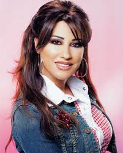

|
Mohamed El FRIHMAT
RSD Les Estudines,12 rue du général Joinville, Saint Denis
email: aliallo913@gmail.com
22 ans,Célibataire
|

|
2013-2014:
2011-2012:
2010-2011:
2009-2010:
2008-2009:
|
Master 2 : Technologie Hypermédia Paris VIII
4ème année : Cycle d'Ingénierie à ESISA.Maroc
3ème année : Cycle d'Ingénierie à ESISA.Maroc
2ème année Cycle préparatoire à ESISA.Maroc
1ère année Cycle préparatoire à ESISA.Maroc
|
EXPERIENCES PROFESSIONNELLES: |
Aout 2011:
Avril 2013-Juillet 2013:
|
Stage d'un mois à l'ONDA (Office Nationale Des Aéroport), Tétouan, Maroc.
Stage de trois mois et demis à LAFARGE Ciment, Tétouan, Maroc.
|
Arabe classique:
Albanaise :
Francais :
Anglais :
|
Lu, écrit, parlé
Lu, écrit, parlé
Lu, écrit, parlé
Assez bonne maîtrise
|
Ecouter de la musique. |
Navigation sur Internet. |
|